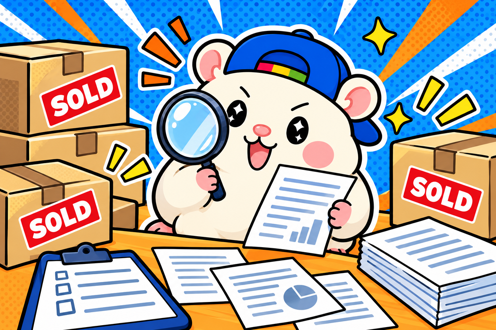
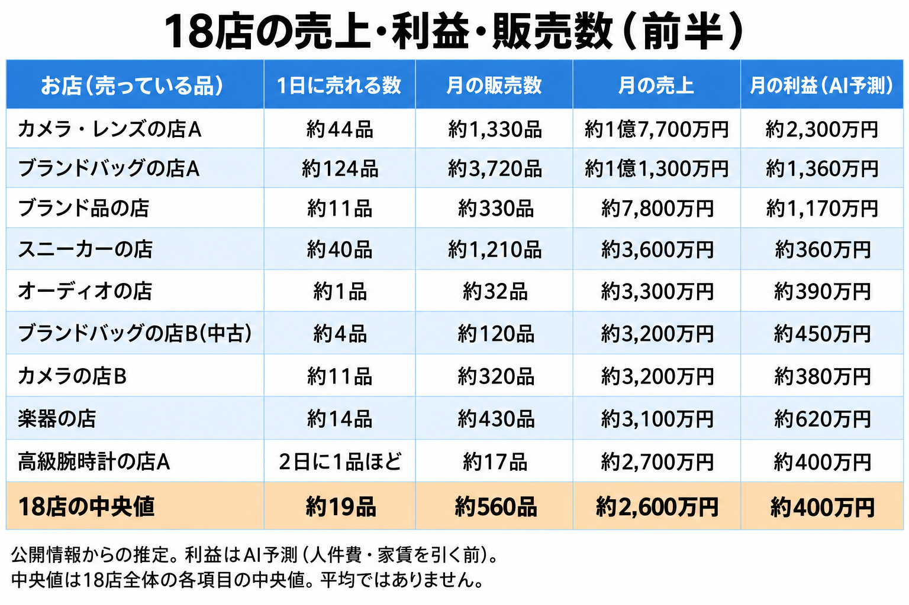
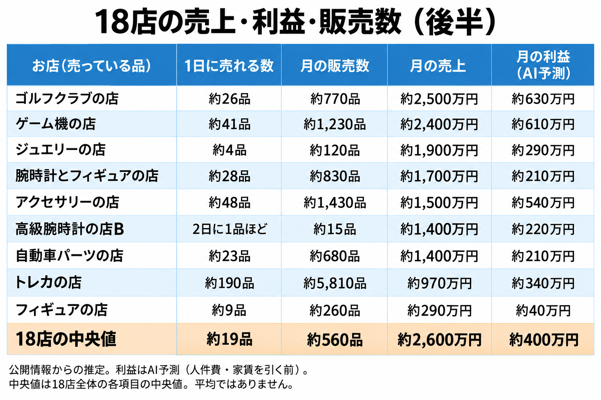
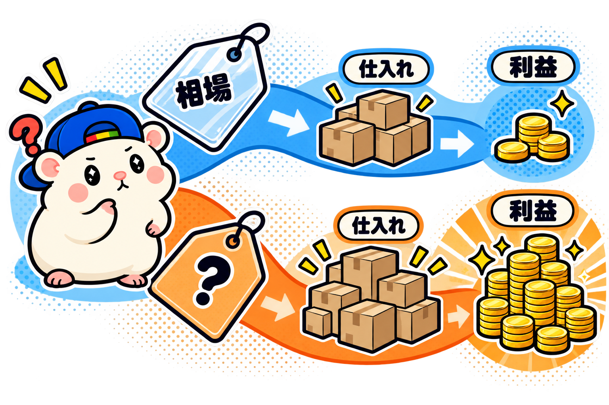
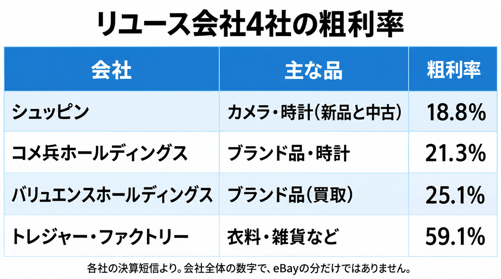
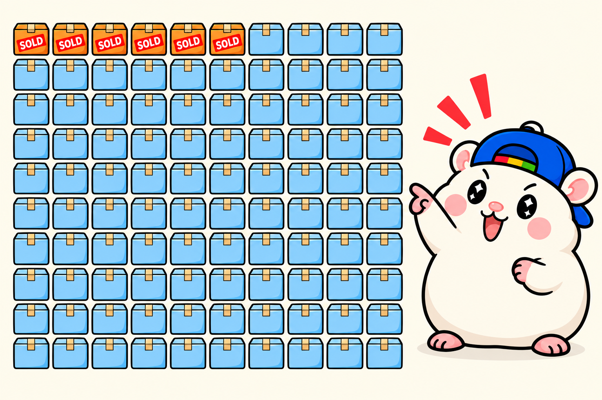

eBayジャパンの受賞セラー18店が、どれだけ稼いでいるかを調べました🐹
18店の中央値で見ました。
・1日の販売数 約19品
・月の売上 約2,600万円。
・利益 約400万円（AI予想）
中央値は、平均ではありません。
18店を大きい順にしたときの、ちょうど真ん中(9番目と10番目のあいだ)の数字です。
平均にすると、月1億円を超える大きなお店に引っぱられて、月の売上は約3,900万円になります。
18店のうち15店は、その平均より下です。
なので、この記事では中央値を使います。
18店を合わせると、月の売上は約7億円になります。
おどろいたのは、1日に売れる数と、売上の大きさが一致しないことです。
2日に1品のペースで、月に1,400万円を売るお店がありました。
1日に190品売れるお店より、大きい売上です。
数字は、どれも公開されている情報からの推定です。
実際の数字とはちがいます。
受賞セラーのお店の積み重ねに敬意を込めて、学ばせてもらうために調べました。
お店の名前は出しません。
調べ方: 売れた商品と、上場企業の決算

これまでのシリーズと同じ、受賞セラー18店です。
売れた数は、eBayの検索で見ました。
出品者名で絞って「売れた商品」にチェックを入れると、過去90日に売れた品が出てきます。
eBayにログインすれば、だれでも見られます。
ためしに、ぼくの店でも同じ検索をしてみました。
出てきたのは79品。
ぼくの店の注文の記録(キャンセルを除く)と、ぴったり同じ数でした。
ただ、この検索は、1つの出品を1件と数えます。
サイズちがいのスニーカーや、同じカードを何枚も出す出品は、何個売れても1件です。
そこで、評価の数でも答え合わせをしました。
評価は、取引のたびに付きます(ぼくの店では、注文の約8割)。
評価の数が検索の数よりずっと多いお店は、評価の数で直しています。
売上は、売れた品の値段を足して、1ヶ月あたりに直しました。
1ドル=157.89円で計算しています(9月18日の欧州中央銀行の基準レート)。
利益は公開されていないので、AIの予測です。
上場しているリユース会社の決算を土台にして、品物の種類ごとに利益率を決めました。
利益は、いつもの出し方です。
売値から、仕入れ値・eBayの手数料・送料を引いた残り。
人件費や家賃は、引く前の数字です。
受賞店の中には、上場企業のグループのお店もあります。
その会社が公表している海外向けの売上(eBay以外も含む)と比べると、今回のeBayの推定は8割ほど。
時期は1年ちがいますが、大きくは外れていませんでした。
18店の、月の売上・利益・販売数


※中央値は、数字ごとに大きい順にしたときの真ん中の値です(平均ではありません)。1日に売れる数・売上・利益は、同じ1つのお店の数字ではありません。
※利益はAIの予測です。
※売上は、値下げ交渉で決まった品も元の値段で数えているので、実際は少し低めです。
※送料を別にもらっているお店は、その送料が売上に入っていません。
1日に売れる数は、2日に1品から、1日190品まで。
月の売上は、約290万円から約1億7,700万円まで。
同じ受賞セラーでも、お店の形はさまざまでした。
受賞店の中には、月の売上が数百万円のお店もあります。
賞は、前の年(2025年)の実績で選ばれています。
それに、賞は売上の大きさだけで選ばれるわけではありません。
伸び率の賞、アメリカ以外の国で伸ばした賞、お客さんの満足度の賞もあります。
わかったこと①: 1日1品ほどでも、月1,000万円を超える
1日に売れる数が1品前後のお店が、3つありました。
高級腕時計のお店2つと、オーディオのお店です。
3店とも、売れた品の値段は平均で1品約$6,000〜$10,000。
月に売れるのは15〜32品ですが、売上は月に1,400万〜3,300万円です。
反対に、1日に約190品売れるトレカのお店は、1品が平均$15。
月に約5,800品売れて、売上は約970万円です。
数で稼ぐお店と、1品の値段で稼ぐお店がある。
どちらのお店も、賞をとっています。
わかったこと②: 売上の大きさと、利益の大きさはちがう

利益の差をつくるのは、仕入れ方でした。
上場しているリユース会社4社の決算で、粗利率を見ました。
粗利率は、売値から仕入れ値を引いた残りの割合です。

※各社の最新の決算短信から。会社全体の数字で、eBayの分だけではありません。
ブランド品・時計・カメラは、相場をだれでも調べられます。
そのため買取の値段も高くなり、粗利は2割前後です。
衣料や雑貨は相場が見えにくいぶん安く仕入れられて、6割ほど残ります。
ここからeBayの手数料(約15%)と送料を引いて、利益率を予測しました。
・相場が見える高額品(カメラ・ブランド品・時計・ジュエリー・オーディオ): 12〜15%
・相場が見えにくい中古の道具・ホビー(トレカ・ゴルフクラブ・ゲーム機・楽器など): 20〜35%
・新品が中心(スニーカー・自動車パーツ・新品のフィギュア): 10〜15%
例えば、トレカのお店と、高級腕時計の店B。
売上は、高級腕時計の店Bのほうが1.5倍大きい(約1,400万円と約970万円)。
でも利益の予測は、トレカのお店のほうが大きいんです(約340万円と約220万円)。
ゴルフクラブのお店は、カメラの店Bより売上が小さいのに、利益は大きい。
約630万円と約380万円です。
売上は、売り方で決まる。利益は、仕入れ方で決まる。だから、仕入れ先を見直す。
買取や、不用品回収・遺品整理で集めた品を、eBayで売る。
いま、そういう流れがあるのも、この数字を見ると納得です。
仕入れ値が0に近いほど、手数料と送料を払っても、利益が残ります。
わかったこと③: 100品出して、1ヶ月で売れるのは6〜7品

出品している数と、1ヶ月に売れる数を比べました。
比べやすい、中古の1点ものを売るお店9店で見ています。
(同じ品を何個も出品するお店は、出品の数え方がちがうので除きました)
9店の中央値は6.6%。
100品出して、1ヶ月で売れるのは6〜7品です。
これも、品物で大きくちがいました。
ゴルフクラブ20%・カメラ19%。
高級腕時計1〜2%・ブランド品2%。
中央値のお店でも、出品の9割以上は、その月には売れていません。
それでも出し続けているから、毎日売れていく。
例えば、出品1,400品ほどの中古ブランドバッグのお店。
1ヶ月で8%ほどが売れて、売上は月に約3,200万円です。
あなたの店なら: 3つの示唆
1. 月の目標から、出品数を逆算する
例えば、月に30品売りたいなら。
売れる割合が6%なら、出品は約500品いります。
自分のジャンルの割合は、同じジャンルの上のお店を「売れた商品」で見れば、だいたい分かります。
2. 数で稼ぐか、1品の値段で稼ぐかを決める
1日1品ほどでも、1品が高ければ月1,000万円を超えます。
高い品は、1品ずつていねいに。
安い品は、出品の数で勝負。
3. 利益を上げたいなら、仕入れ先を見直す
相場が見える品は、どこで仕入れても利益率は1割台になりやすい。
相場が見えにくい仕入れ先を1つ足すと、利益率が変わります。
まとめ
・18店の中央値(平均ではなく、真ん中の値)で、1日に売れるのは約19品。月の売上は約2,600万円、利益の予測は約400万円
・1日1品ほどでも、1品の値段が高ければ月1,000万円を超える
・利益の差は、仕入れ方の差。相場が見える品は1割台、見えにくい品は2〜3割
・中古の1点ものなら、100品出して、1ヶ月で売れるのは6〜7品
受賞店の数字は、毎日の出品と発送の積み重ねそのものでした。
学ばせてもらいました。
あなたのジャンルの上のお店は、1日に何品売れていますか?
eBayで「売れた商品」に絞って、1店だけ見てみてください。
自分の店の目標が、数字で決まります🐹
▼第1弾: eBay有力セラーのビジネスポリシーを調べてみた結果(返品・配送除外国)
https://rental-space.net/articles/2026-09-11-ebay-award-seller-return-shipping.html
▼第2弾: eBay有力セラーの発送を調べてみた結果(配送方法・日数)
https://rental-space.net/articles/2026-09-14-ebay-award-seller-shipping.html
▼第3弾: eBay有力セラーの出品数と価格を調べてみた結果
https://rental-space.net/articles/2026-09-16-ebay-award-seller-listing-count-price.html
▼第4弾: eBay有力セラーの商品ページを調べてみた結果
https://rental-space.net/articles/2026-09-17-ebay-award-seller-product-page.html
▼第5弾: eBay有力セラーの説明文を読んでみた結果
https://rental-space.net/articles/2026-09-18-ebay-award-seller-description.html
▼第6弾: eBay有力セラーのタイトルを読んでみた結果
https://rental-space.net/articles/2026-09-18-ebay-award-seller-title.html
▼中の人🏠(レンタルスペース23部屋・売上1.5億)のレンスペ実録
https://note.com/rentalspace_kiku
▼ブログ(eBay×レンスペ、全記事まとめ)
https://rental-space.net
▼この店のやり方は、ぜんぶ1冊にまとめてあります
リサーチ・出品・値付け・顧客対応まで、初月利益10万4,286円を出した実店舗の記録と手順を全部書いた教科書です。
読んだその日から、AI社員の作り方をそのまま真似できます。
『AI × eBay輸出の教科書 — 梱包以外、ぜんぶAI』
https://rental-space.net/kyokasho/ebay/
販売価格は3部売れるごとに2,000円ずつ値上がりします（上限あり）。内容・最新価格は販売ページをご確認ください。